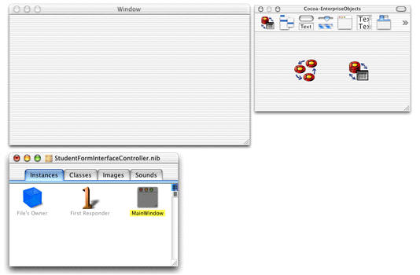
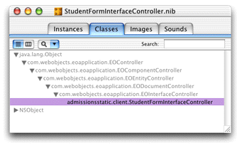
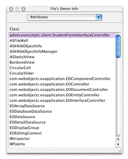

To create custom interfaces, you use Interface Builder, the same application used to build Cocoa desktop applications in Mac OS X. This tool gives you a wide variety of widgets to choose from, and most importantly, allows you to connect the user interface to objects in your data model.
The associations and connections you can make in Interface Builder make it the best tool for developing completely custom user interfaces for Java Client applications. You can write completely custom Java Client user interfaces in raw Swing or by using other third-party tools, but then you'll have to make all the associations and connections programmatically.
Interface Builder's integration with EOModeler allows you to easily build a user interface that is tightly coupled to your data model. It's as simple as dragging model elements from EOModeler into the content window in Interface Builder.
A blank window (which corresponds to the MainWindow object), a nib file window, and a palette window appear when Interface Builder launches, as shown in Figure 6-5.
Figure 6-5 The Interface Builder environment
Before adding to the nib file, you may need to associate it with its controller class. This should happen for you but if it's not, you must make the association manually.
Open the nib file from within Project Builder and click the
Classes tab of the nib file window. View the classes in inheritance
mode (the vertical list), and click the disclosure triangle next
to java.lang.Object to
reveal the Java Client classes. Continue clicking disclosure triangles
up through com.webobjects.eoapplication.EOInterfaceController as shown
in Figure 6-6.
Figure 6-6 Classes pane in the nib file window
Click com.webobjects.eoapplication.EOInterfaceController in
the classes list and press Return. This subclasses EOInterfaceController
and thus the new class inherits its targets and outlets. The name
of the new subclass is the fully qualified name of the nib file, admissions.client.StudentFormController,
as shown in Figure 6-6.
Now that you've created a new class, you must associate
the nib file with it. To do this, switch to the Instances pane of
the nib file window and click File's Owner. Choose Show Info from
the Tools menu and choose Attributes from the pop-up menu. In the
list of classes, select admissions.client.StudentFormController as
shown in Figure 6-7.
Figure 6-7 Assign the custom subclass to File's Owner
